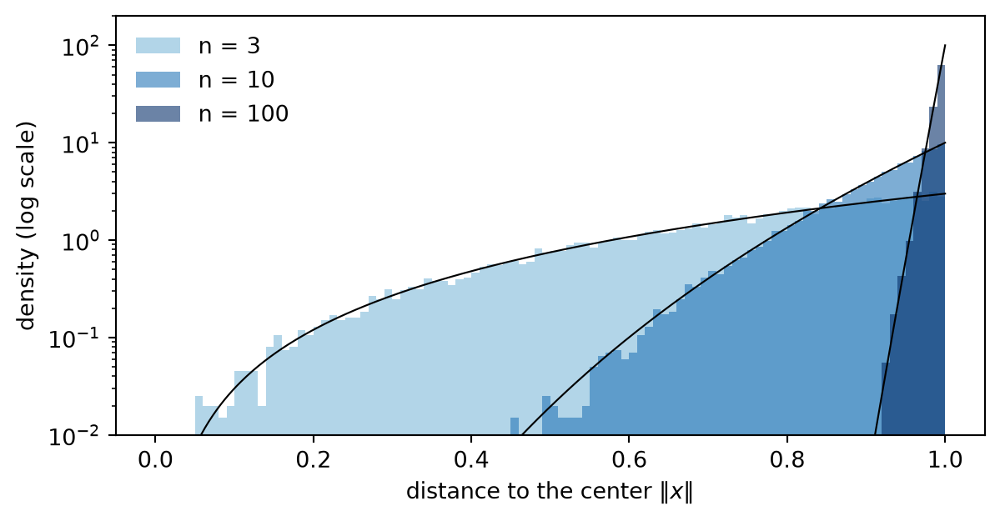
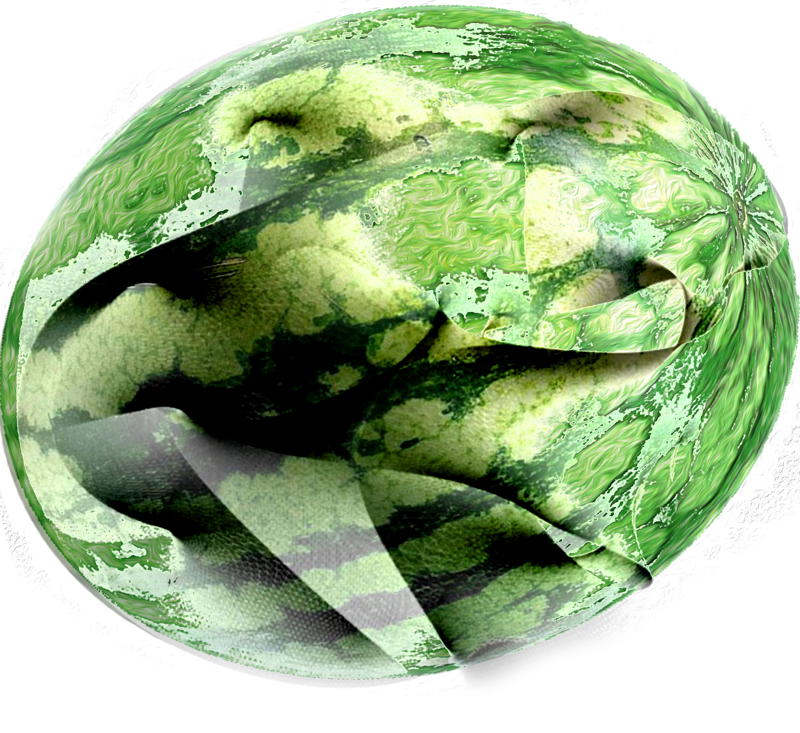
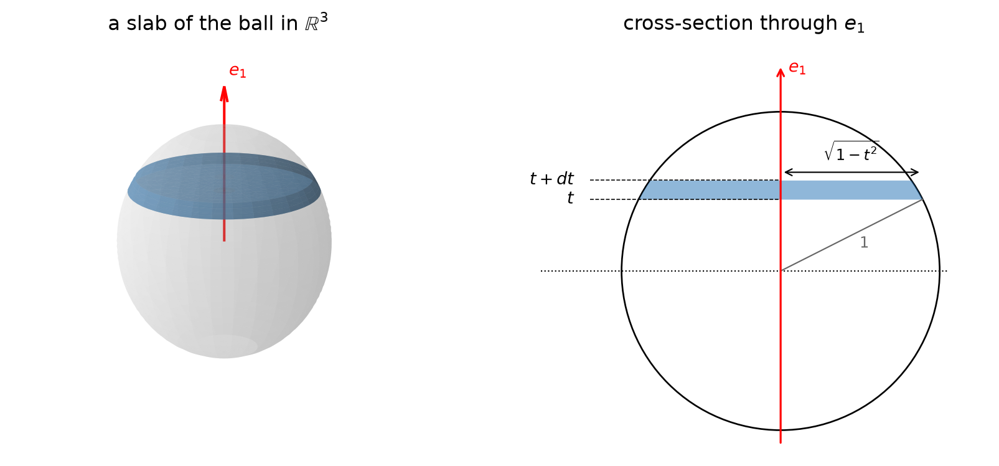
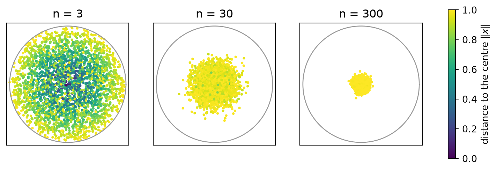
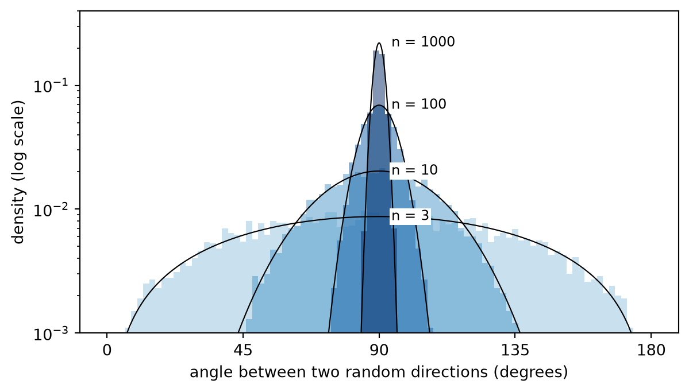
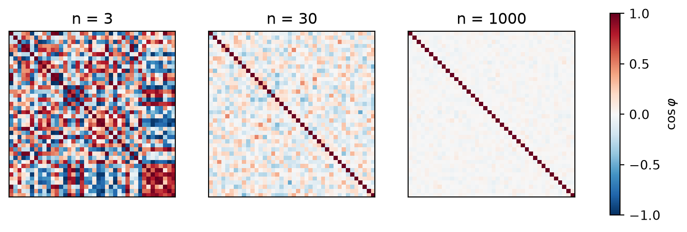

Pick a point uniformly at random in the unit ball of \(\mathbb R^n\). For high enough \(n\) this point will practically always fall along the surface, i.e. high-dimensional watermelons have no red part. But not only that, this is also true for the equators of high dimensional spheres. Let’s see why.
Warm-up: the surface
First, the claim from the introduction: a random point in the unit ball is practically always near its surface. Since we choose the point uniformly at random, the chance of being near the surface is the same as the volume of a thin shell of width \(\varepsilon\) near the surface. Like an onion.
Shrinking the unit ball by a factor \(1-\varepsilon\) gives exactly \(\{\|x\| \le 1-\varepsilon\}\), and shrinking multiplies volumes by \(1-\varepsilon\) once per coordinate, so
\[ \mathbb P(\|x\| \le 1-\varepsilon) = (1-\varepsilon)^n \longrightarrow 0. \]
For \(\varepsilon = 0.01\) and \(n=3\) the inner part holds \(97\%\) of the volume, for \(n=100\) it holds \(37\%\) and for \(n=1000\) it holds \(0.004\%\). The rest lies in the thin shell \(1-\varepsilon < \|x\| \le 1\) near the surface.
Sampling random points shows it directly. Their distance to the centre has density \(n r^{n-1}\) (the derivative of \(r^n\)), and as \(n\) grows it gets closer and closer to \(r = 1\).
Setup for the equator
Now let’s define what equator means. For a given unit vector \(e_1\), the equator is the hyperplane \(\{x_1 = 0\}\), and the latitude of a point is its coordinate \(x_1\). Being close to the equator means having \(|x_1| < \delta\) for some \(\delta > 0\).
In \(\mathbb R^3\) the equator of a sphere (\(S^2\)) is a circunference (\(S^1\)), which feels like a very small part. But in \(\mathbb R^n\) the equator of \(S^{n-1}\) is an \(S^{n-2}\). It only loses one dimension out of \(n\), and in \(\mathbb R^{100000000}\) losing one dimension out of a hundred million may not matter as much.
Slices and slabs
Where does the random point’s latitude \(x_1\) tend to land? It falls between \(t\) and \(t+dt\) with probability proportional to the volume of the thin slab \({t < x_1 < t+dt}\) of the ball. The slab is approximately an \((n-1)\)-dimensional ball of radius \(\sqrt{1-t^2}\) with thickness \(dt\), so its volume is proportional to \(\big(\sqrt{1-t^2}\big)^{n-1}dt = (1-t^2)^{\frac{n-1}{2}}\,dt\). Hence the latitude has density
\[ f_n(t) = c_n\,(1-t^2)^{\frac{n-1}{2}}, \]
where \(c_n\) is some function of \(n\) (we don’t care). We will use it shortly. Also, be careful, the diagram is in 3D but the calculation is for an arbitrary number os dimensions \(n\).

Now let’s find the variance of the latitude \(x_1\). Since \(\mathbb E[x_1]^2=0\) is clearly zero, the variance is \(\mathbb E[x_1^2]\). We also have that \(n\mathbb E[x^2_1]=\mathbb E[\sum^n_i x_i^2] = \int_0^1 r^2\, n r^{n-1}\,dr = n \int^0_1 r^{n+1}\,dr = \frac{n}{n+2}\) so Var\((x_1) = \frac{1}{n+2}\).
For large \(n\) we then have \(x_1 \sim \frac{1}{\sqrt n}\), so \(t^2\) is small and \(f_n(t) = (1-t^2)^{\frac{n-1}{2}}=\exp\!\big(\tfrac{n-1}{2}\ln(1-t^2)\big)\approx e^{-(n-1)t^2/2}\), which is a Gaussian. Hence
\[ x_1 \approx \mathcal N\!\left(0, \tfrac1n\right). \]
Here is the latitude of sampled points: for \(n=3\) it follows \(f_n\) but is far from Gaussian, while for \(n=20\) and \(n=200\) it is indistinguishable from \(\mathcal N(0,1/(n))\) and narrower each time.

To see what this means, take the slab \(\|x_1\| < 0.01\), just 1% of the diameter. Let’s see what percentage of the volume sits inside this slab for different dimensions \(n\):
| \(n\) | volume inside \(\lvert x_1\rvert<0.01\) |
|---|---|
| 1 | 1% |
| 3 | 1.5% |
| 100 | 8% |
| 1000 | 25% |
| 10 000 | 68% |
| 100 000 | 99.8% |
| 1 000 000 | \(1 - 10^{-23}\) |
So as \(n\) grows, a thin slab around the equator holds almost all of the volume, and by symmetry this does not depend on which equator we chose.
Close to every equator at once?
But now we run into an issue: if most of the mass sits in the slab around one equator, how can it also sit in the slab around a different one? In reality it isn’t a problem, because the slabs overlap.
Take two different equators and the slabs around them. They both miss the same fraction of the total volume of the ball, let’s call it \(p\). The probability of being in both slabs is at least \(1-2p\), which is still very close to 1 because we already know \(p\) is very small.
This is just the union bound: a point outside the intersection of the slabs \(S_1, \dots, S_k\) must be outside at least one of them, so
\[ \mathbb P\Big(x \notin \bigcap_{j=1}^k S_j\Big) \le \sum_{j=1}^k \mathbb P(x \notin S_j) = kp \quad\Longrightarrow\quad \mathbb P\Big(x \in \bigcap_{j=1}^k S_j\Big) \ge 1-kp . \]
Since \(p\) shrinks exponentially as \(n\) grows, for large enough \(n\) the bound \(1-kp\) stays close to 1 even for many equators: a random point is near all of them at once.
For example, in \(n = 10\,000\) dimensions 99.5% of the points lie within 0.05 of all ten thousand coordinate equators at once, i.e. they have no coordinate larger than \(0.05\). Practically all of them, while their mean distance to the centre is \(n/(n+1) \approx 0.9999\).
Of course we still need a finite number of equators and a high enough dimension \(n\), but the point is that the equator slabs are far from disjoint. In 3D two equators of the sphere only meet only at two antipodal points, but in \(n\) dimensions the intersection of \(k\) equators is a whole sphere \(S^{n-1-k}\), still huge when \(k \ll n\).
The shadow
To illustrate this, take each sampled point and keep only its first two coordinates \((x_1, x_2)\): that is its projection on a plane, like the shadow of a ball on the floor. Below, each dot is the shadow of one point, and its colour is that point’s true distance to the centre, \(\|x\|\), computed with all \(n\) coordinates: yellow means the point sits on the surface, purple means it sits near the centre.

For \(n=3\) the shadow fills the disk and the colours are mixed: a dot in the middle of the disk may come from the centre of the ball or from one of its poles. At \(n=300\) every dot is yellow, so every point sits close to the surface, and yet the shadows form a tiny cloud in the middle. The distance to the centre comes from the other \(298\) coordinates, which the shadow cannot see. Since \(x_1\) and \(x_2\) are both small, every point is close to the equators \(\{x_1=0\}\) and \(\{x_2=0\}\) at once.
Everyone is on everyone’s equator
Every point has its own pole, the direction \(\frac{x}{\|x\|}\). So we can use one random direction \(\theta\) as the pole and ask at what latitude another independent random direction \(\theta'\) sits. Rotating \(\theta\) to \(e_1\), that latitude is just \(\theta'_1\), and slicing the sphere (the slice at latitude \(t\) is a sphere of radius \(\sqrt{1-t^2}\), tilted) gives it density \(\propto (1-t^2)^{\frac{n-3}{2}}\). With \(t = \cos\varphi\), the angle between the two directions has density
\[ p_n(\varphi) \propto \sin^{n-2}\varphi, \qquad \varphi\in[0,\pi]. \]
For \(n=3\) this is \(\sin\varphi\), fairly spread out. For large \(n\) it becomes a peak at \(90°\) of width \(\sim 1/\sqrt n\) radians: two random directions in \(\mathbb R^{1000}\) are within \(90° \pm 5.4°\) (“basically” orthogonal) of each other with probability about \(99.7\%\).

The same happens for many directions at once. Below we take \(40\) random directions and color the cosine of the angle between every pair. The diagonal is each direction with itself, so it is always \(1\). For \(n=3\) the rest is a mess of positive and negative values, since 40 directions in 3D cannot all be perpendicular. For \(n=1000\) everything outside the diagonal is close to \(0\): all 40 directions are nearly perpendicular to each other at the same time.

Not that crazy
In reality this is all not that counterintuitive. The radius constraint \(x_1^2+\dots+x_n^2 \le 1\) is a “budget” shared by \(n\) coordinates. As we saw in the warm-up, almost all of the volume sits near the surface, so the budget is almost fully spent. A point could spend it all on one coordinate, but almost all of the volume comes from points that spread it evenly, giving each coordinate about \(1/n\). So every coordinate is of order \(1/\sqrt n\): the point is near every equator, while the total still adds up to a radius close to 1. Even a point that spends it all on one coordinate is only special in our choice of axes: after a rotation, \((1,0,\dots,0)\) becomes a point whose budget is spread evenly like any other.